About Tags
Overview
If you use an libms API called LMS_GetText for text data, it is possible acquire the text data but tags will appear in certain potions.
Tags are control instructions that are embeded in sentences. For example, ruby text can be added to a range of text, the player name can be inserted in the text, or waits can be added to affect the speed at which the text appears. WIth the Message Studio, the editor has the ability to add these tags. For more information, please see Tag Overview.
With the standard output binary resource, tags within the text data are output as specially formatted binaries. Just how this tag information is displayed is dependent on how it is implemented in the game.
"System tags" and "user defined tags" are both output as binaries. For this reason, they both have to be handled correctly when processed. Even with "system tags," it's not as though the Message Studio will handle the ingame rendering, so please be aware that these will have to be activated specifically. As for information about whether a tag appears in the text or not, this can be handled relatively easily by using the Tag Processor Class in Nintendo Ware for Revolution.
Tag Binary Format
About Basic Formats as they Relate to Tags
Text containing tags are of the below formats.
The "STRING" entries represent characters that the user has entered. If a tag appears inside of that, tag information will be entered. The data's terminal end will consist of NULL characters. When user entered data and NULL characters are output, they will be encoded in the set format.
The start of independent tags or tags with ranges are marked with SHIFT IN characters (U+000E) and these can be written out using the set encoding format. In other words, the start of a tag that will be output using a UTF-16 big endian will be 00 0E but the output of a UTF-32 little endian would be 0E 00 00 00.
Immediately after these characters, data input as tags will be of a fixed amount. The format of the data will be dependent on the tag parameter settings registered to the project file (*.msproj). Starting tags will all be formated in the following way. (There are some exceptions. This is explained in the following section.).
For information on how the contents change depending on the parameter settings please see the bottom of the page.
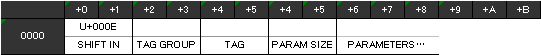
Immediately after starting with a SHIFT IN, starting tags include information including tag group ID, tag ID, and parameter size (in bytes), per the image above. The tag group ID is 2 byte information and will automatically be assigned a number in the order defined by the project file. The order in which tags are defined can be checked by outputting the project binary file or acquired by outputting the C language header file. The parameter size is the byte count of the associated parameter section. As for where the text will be displayed, make sure to only move the pointer this amount before starting to draw.
The trailer for tags with ranges is marked by SHIFT OUT characters (U+000F) when output. After this the group ID and tag ID (both at 2 bytes) are output and overall it will appear per the following:
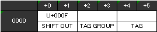
Color tags
Color tags are defined by the Message Studio as tags with ranges. The user can define where the color change should start and where it should end. However, because it is necessary to draw text using something like a pushdown stack for the colors when rendering, when the Message Studio creates a binary, it will flatten color tag information. If flattened, the end tag will not be taken into consideration, but what will need to happen is that the color that was applied will need to be rendered on the spot.
In order to set color data, there are 2 possible ways to do this depending on the message binary (*.msbt) output settings. One is to directly output the color component and the other is to refer to the index number from the project settings. In order to change the settings, choose "Project" then ""Data Output Settings" and then select the "Message Binary" item. Using the color component is set as the default setting.
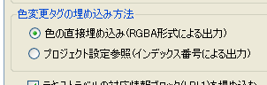
First is an explanation of how the color components are directly output. In order for the color components to be output, the 4-byte value will be output to the parameter. Per the below, 1-byte of information each for R (red), G (green), B (blue), and A (alpha) will be exported. For the rest of the sentence (where color tags are not used), this will be exported as black (This will be improved later so that it can be set).
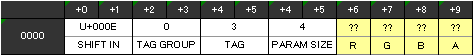
When a project setting browser is used to upload data, a 2-byte value will be used to output the parameter. Here, the index number color settings for the project file will be output as 2-bytes. The rest of the sentence (where color tags are not used) will be output as 0xFFFF.
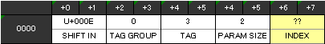
Change font size tag
With regard to the font size change, like color, the range settings can also be set and combined when output. Size data is represented by a percentage when output (In other words 100 is standard size).
Ruby Text
You can use ruby tags to show the hiragana readings of difficult kanji characters. These tags are set by applying ruby text of a set parameter to a specific range of kanji and are output in a specific format.
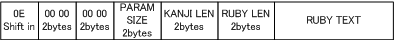
Ruby tags are stored in memory in the tag format following the length of the kanji in bytes. Next, the length of the ruby text will be saved to memory in bytes. Ruby information will be encoded to the specified format when output to the binary.
Alignment
When text is rendered, there are situations where the the rendering process cannot continue because of memory alignment. For example, the CharStrmReader class Nintendo Ware for Revolution must start from a 2-byte boundary or an assert will occur. In order to resolve this, if the tag parameter does not line up with the boundary, the Message Studio is set to automatically insert padding. The padding will be inserted based on the following algorithm.
- With the data having been output per the set encoding format, the byte count for the control code output will be calculated. For example, if it's UTF-8, then it will be 1-Byte, UTF-16 would be 2- bytes, and UTF-32 would be 4-bytes.
- When outputting the parameters of a character string type, if the data location of the data that is being output at that time is not a multiple of the byte count previously calculated, padding will be added before and after in the location of the character string byte count.
- With all of the tag parameters output, if the location is not a multiple of the previously calculated byte count, adding will be inserted immediately following.
Also, so that the padding is easily noticed by the programmer, it will be written as 0xCD.
Example of Alignment
If a user tag is defined like the one below is output at UTF-16,
| libms_u8_t | data1 |
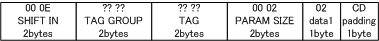
It will look like this. Though the actual parameter size is 1-byte, with the added padding, please note how the parameter size (PARAM SIZE) of 2 is inserted.
Because 2 u8 data are repeated in sequence, a 2 is inserted in data1 and a 4 in data2 and if it's output as UTF-16,
| libms_u8_t | data1 |
| libms_u8_t | data2 |
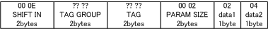
This is what will happen and no padding will be inserted.
About Parameters
Character String Parameters
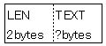
LEN represents the total byte count of the text data that follows. TEXT represents the byte counts of the characters that total the LEN. (The encoding set in the output settings.)
List Type Paramters
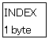
The selected list items are stored in INDEX.
Other Parameters
It will be exported in the format specified.
Parameter sample
[Sound:SE name="TEST_SOUND" volume="10" effect="BLINK" ]
For tags like the one above, suppose it was set per the following:
- Sound: The tag group defined as the 3rd counting from the System Group.
- SE: The tag defined as the 4th in the group.
- name: String type parameter
- volume: s32 type parameter
- effect: List type parameter
If this is output using these settings and the UTF16 encoding form, the data will have the following composition.
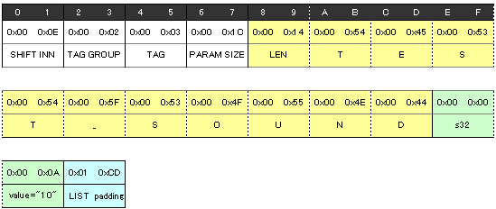
 Introduction
Introduction Language Settings
Language Settings Editing Messages
Editing Messages Shared Binary Format
Shared Binary Format